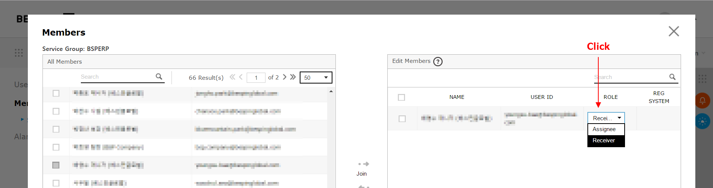
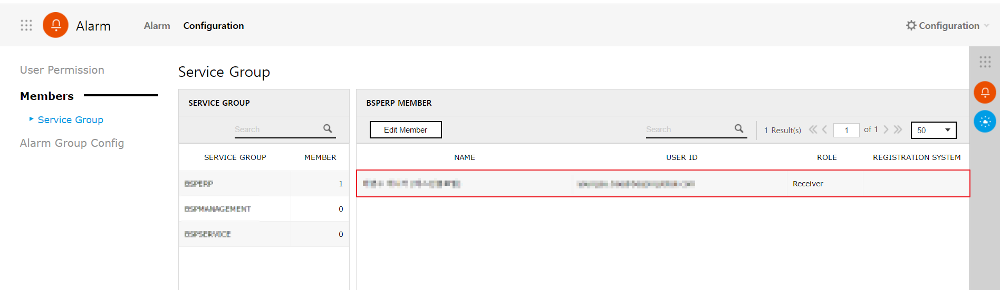

DBQCS
Database 설계 및 모델링 시, 사용할 메타데이터 관리 및 품질 관리 업무를 진행할 수 있습니다.
DB 품질 보증 업무 관리
DBQCS 서비스를 통해 DB의 메타 표준 및 품질과 성능을 향상 시키기 위한 관리 방법을 설명합니다.
1. 메타데이터 관리
1.1. Dictionary
- 표준 용어, 표준 단어, 표준 도메인, 금칙어, 주제어 등을 관리합니다.
- Create New 버튼의 Metadata의 변경 관련 요청을 작성할 수 있습니다.
- 표준 용어는 표준 단어와 표준 도메인으로만 구성할 수 있습니다.

- 표준 단어는 도메인을 제외하고 사용할 수 있습니다.
- 표준도메인은 Database Type 별로 Data Type을 설정할 수 있습니다.
- 표준 단어로 대체 가능한 단어는 금지어로 설정할 수 있습니다.
- Database에서 사용할 주제 영역을 구성할 수 있습니다.
1.2 Request for Metadata
- Dictionary로 관리되는 메타데이터의 추가/수정/삭제 요청을 할 수 있습니다.
1.3. DB Guideline
- 조직 내에서 사용하는 표준 정책 및 설계 가이드라인 등의 매뉴얼을 관리합니다.
2. Request List
2.1 DB 성능 및 품질 향상을 위한 요청 및 검수 업무를 관리할 수 있습니다.

2.2 Create New 버튼으로 Request를 작성할 수 있습니다.
2.3 모든 요청 목록 / 내가 요청한 목록 / 내게 할당된 요청 목록 / 참조자로 추가된 요청 목록을 의도에 따라 조회할 수 있습니다.